27 марта, вторник
Рано проснулся и при этом хорошо выспался. Перекусив подарками израильских друзей и свежезаваренным чаем тронулся в путь. Ветер стих как будто вчера и не было бури.
Сегодня день красивых видов. Мой путь лежит вдоль обрыва кратера Рамон. Делаю много остановок и фотографирую. Масштабы и космические пейзажи кратера действительно впечатляют.
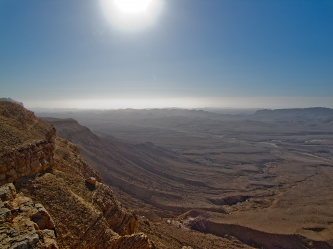
Кратер Рамон
Вот и Мицпе Рамон - достаточно крупный населенный пункт, заезжаю в магазин купить еды, но не тут то было. Оказывается, добрая половина продуктов в Пейсах не продается. Витрины занавешены белой тканью. Из круп только рис и еще чего-то, ни макарон, ни хлеба, ничего, что связано с дрожжевым тестом, одним словом только кошерная еда.
Варить рис на бурбуляторе мне не хочется, и я продолжаю поиски обычной еды, но абсолютно во всех магазинах одинаковая картина. В итоге покупаю какую-то ерунду, еще раз благодарю про себя Игоря с друзьями, которые щедро поделились со мной продуктами, и продолжаю путь вдоль обрыва кратера Рамон.
Как известно все хорошее рано или поздно заканчивается и даже кратер Рамон. Теперь мой путь лежит в направлении Большого кратера по весьма рельефной дороге. Большинство подъемов и спусков не слишком длины, но очень круты. Настоящие американские горки, хотя есть несколько весьма приличных подъемов.
Американские горки
Больше всего запомнился маале в конце этого участка. Такое ощущение, что под ногами мука. Любая попытка затормозить приводит к моментальному переносу заднего колеса вперед переднего, но и не тормозить невозможно - очень большой уклон. Пришлось, даже спешится на этом спуске.
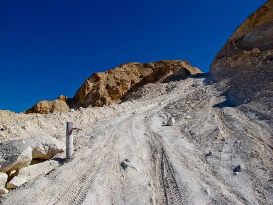
Мучной спуск
Дальше идет район очень интересных фигур выветривания. Необычно и красиво. В планах было посещение парочки нахлей уходящих перпендикулярно налево, но время уже поджимало, пришлось отказаться. Подозреваю, что зря. Издали район смотрится очень привлекательно.
Остаток дня прошел по менее примечательным местам - джиповки и синглы по холмам. К границе Большого кратера подъехал уже в темноте. На ночлег остановился в русле ручья. Кстати, это не очень правильно, в случае дождя по этим руслам может нестись весьма приличный поток воды, но дождя не предвиделось, как и ровной площадки, так что пришлось вставать с нарушением правил.
Посреди ночи проснулся абсолютно мокрым. Поначалу подумал, что прошел дождь, так как спальник промок насквозь, высунулся из своей недопалатки и понял, что это роса, настолько мощная, что все вокруг буквально покрыто слоем воды. Недостатки недопалатки стали очевидны, к сожалению.
Дневной пробег 68 км, набор высоты 1069 метров
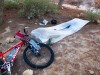 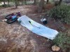 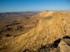 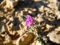 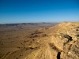  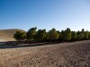 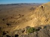
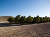 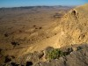  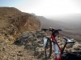 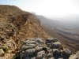 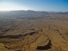 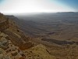 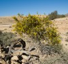 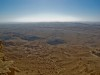 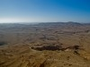 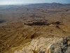 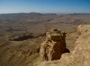 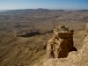 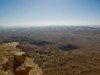 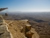 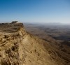 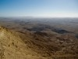 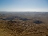 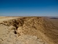 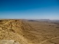 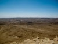 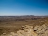
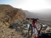 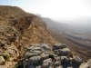 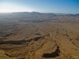 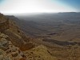 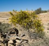 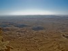 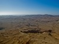 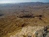 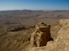 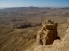 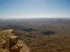 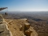 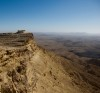 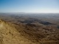 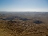 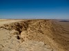 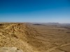 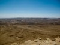 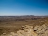  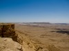 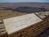 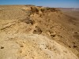 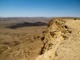 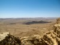 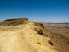 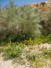 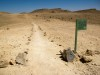 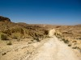 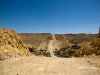
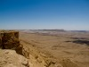 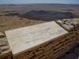 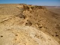 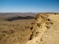 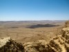 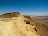 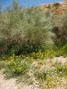 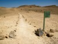 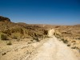 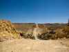 
 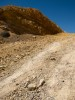 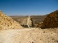 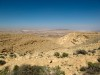 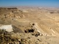 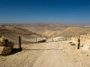 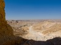 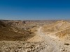 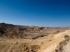 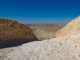 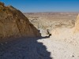 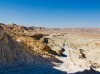
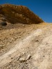 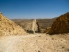 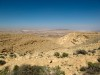 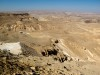 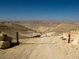 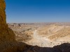 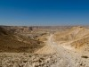 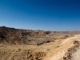 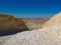 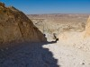 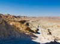